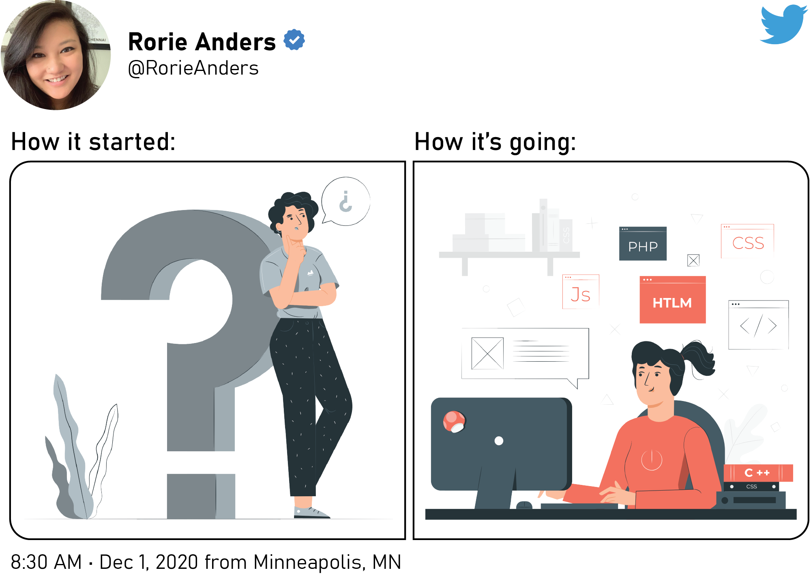

-
HOME
DIGITAL NARRATIVE
How it all began...
Ever since I was little, I loved to write. Whether it was creating elaborate stories, writing a daily journal, or even endlessly practicing my handwriting to create my own "Rorie script", there was something extremely satisfactory about transferring the chaos in my mind into an organized finished product. When it came to deciding what medium to use, I was never fussy. I loved experimenting, especially as my interests became more digitally-based. Growing up alongside technology, I notice now that my creative escapades and skills advanced as technology continued to progress.
Graduating from mere paper and crayons (the 64 pack with the sharpener included, of course), I began doodling with MS Paint on our desktop PC that basically weighed as much as I did. Then I was introduced to the world of Microsoft Word Clip Art and WordArt which beautified many an essay or poster board project. The mechanics were simple enough, but the opportunities to find relevant cartoon images and crazy fonts were endless. There would be no stopping this creativity train!
As I grew older, I was introduced to more video games and software that stimulated my love for writing and illustration. I have this vivid memory of Computer Class in elementary/middle school. The first half of the class you had to complete a number of typing tasks through, then the rest of the time was free. At that time, my favorite game to play was Storybook Weaver, and I used that software for everything - from narrating make-believe stories to creating instructions on how to make a grilled cheese sandwich.
Looking back on things now, I think Storybook Weaver is where I began my love of creating booklets of stories or information. This simple video game showed me how much further my creative thoughts and ideas could go, especially when using the right tools. From there, I continually sought out more apps, software, or devices that could enhance my documentation and design efforts. Whether it was through school or just for my own interests, I always wanted to try out the "next big thing", even if that meant just simply dipping my toe in the water. I appreciate Amruta Ranade's (2018) advice to learn new technology one small piece at a time. There are so many facets to learn and gain more proficiency.
Knowing myself, I have always been a stickler for keeping things organized, putting things in a logical order, and making the finished product look spiffy. I have found that when those features are lacking, that is when I rise to challenge of filling that void. On multiple occasions I have started jobs where there was no on-boarding material provided for new hires. So, like the nerd I am, I created training manuals and user guides for software or processes for future hires to use for my own amusement. Creating documentation that clearly outlined everything someone needed to know to get the job done was exciting and fulfilling.
REFLECTION

In conceptualizing my journey and newfound experiences in digital literacy, I immediately thought of the social media trend "How it started, how it's going." The purpose of that challenge is to post an old picture side-by-side with a current one showing progress. I decided that designing a Twitter post was a great way to symbolize the changes I have made as I progress through the field of Technical Communication. Starting off in the graduate program, I had a basic understanding of the field. I more or less knew the basics for technical writing through on-the-job experiences and hands-on learning. But honestly, starting off, I knew nothing compared to what I know now (and this is just a year into the program).
As I reflect on my digital literacy, it is amazing to think that I started off creating angular designs in MS Paint and have progressed to complex technical illustrations in SolidWorks Composer, Adobe Illustrator, and Adobe InDesign. I have the knowledge to use website builders online, but now I have a greater understanding and appreciation for the architecture that goes into actually building a site from scratch. Not only do I know the elements that comprise a static site, but I have successfully designed and published my own site from the bottom up!
I have always been a self-motivated individual when it comes to learning new skills or teaching myself how to do something. I prefer taking things at my own pace and really dissecting the process down. So it is no surprise that I would take this same approach in improving my digital literacy. I found that this proved a positive and hindrance throughout this semester. Many times I spent a lot of extra time trying to understand the processes and fundamentals for HTML, DITA XML, and Markdown. Oftentimes these experiences were successful, but there were a lot of drafts and "oops" folders created in order to finally get the finished product. Being a perfectionist, I often would complete the assignment in one manner...and then revisit it later and totally revamp my edits or add in extra features that weren't necessarily required. I am definitely someone who has a vision in their mind - and when it comes to making it a reality, I want to get as close to the imagined outcome as possible. This was especially true for working in Oxygen XML and creating the Structured Authoring assignment. I found myself being extremely specific in how I wanted my document to look, that I worked tirelessly making multiple files and edits until I got it right.
In addition to improving my own digital literacy, I also learned the importance of our work in enhancing the digital literacy of others. In working with the Minnesota Austin Healey Club, my team and I were capable of understanding the digital literacy and competence of our potential users and adjust our designs to better fit the needs of our target audience. By offering suggestions on how to improve accessibility and usability of the website, we are also improving the experience of the users - allowing them to use the information and digital platform to find, evaluate, and communicate the information they desire. Working more hands-on with a client by listening to their needs and concerns and discussing different content strategies and project plans allowed the teams to provide a variety of recommendations to update and improve the old website. Through productive communication and collaboration, technical communicators are capable of transmitting important information as effectively and efficiently as possible.
Despite my bumpy road getting to the Technical Communication field, I appreciate all the diverse experiences I have had leading up to my current job as a Technical Writer/Illustrator. And now that I have a job that I love and am continuing my education to improve my skills, I can feel myself become more excited for what lies ahead and what opportunities I can conquer next. With 2020 coming to an end, I basically have a year of schooling under my belt geared towards my Technical Communication career. It is crazy to think of everything I have learned in a year! I have gained more experience in intercultural communication, was introduced to the ethical theories that influence the field today, learned the importance of audience analysis and user-centric principles, and studied different design fundamentals that can complement and enhance my work. There have been some ups and downs along the way - that's no surprise as the majority of the topics learned this semester were new. But despite the hiccups here and there, one major lesson I have learned is to be resourceful in learning. There are so many new and improved methods for learning and improving my competency in technology and digital platforms. Now it is just a matter of keeping up with the ever-evolving nature of technological advances.